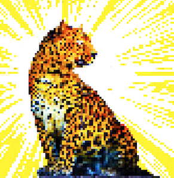

About Me
Currently, I am a Phd Student in the department of Computational Media and Arts under Prof. Huamin Qu's Supervisor in Hong Kong Science and Technology University.
I did my Bsc Computer Science Degree in University of Birmingham, UK and completed my Master of Fine Arts degree in China Academy of Art.
My interests are often found related with sound, accessibilities in HCI, visualization, robotics and cybernetics.
Please contact me with my University email if you feel like it (zmaaf at connect dot ust dot hk).
Here is my CV if you interested in : Kenny's CV